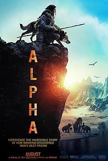

1)Avengers:Infinity War
Genre:action, fantastic
Release date: April 23,2018
Brief description: The film is directed by Anthony and Joe Russo, written by Christopher Markus and Stephen McFeely, and features an ensemble cast including Robert Downey Jr., Chris Hemsworth, Mark Ruffalo, Chris Evans, Scarlett Johansson, Benedict Cumberbatch, Don Cheadle, Tom Holland, Chadwick Boseman, Paul Bettany, Elizabeth Olsen, Anthony Mackie, Sebastian Stan, Danai Gurira, Letitia Wright, Dave Bautista, Zoe Saldana, Josh Brolin, and Chris Pratt. In the film, the Avengers and the Guardians of the Galaxy attempt to stop Thanos from amassing the all-powerful Infinity Stones.
2)Alpha
Genre:Action&adventure, Drama, Mystery & Suspence
Release date:Augest 17, 2018
Brief Description: An epic adventure set in the last Ice Age,ALPHAtells a fascinating, visually stunning story that shines a light on the origins of man's best friend. While on his first hunt with his tribe's most elite group, a young man is injured and must learn to survive alone in the wilderness. Reluctantly taming a lone wolf abandoned by its pack, the pair learn to rely on each other and become unlikely allies, enduring countless dangers and overwhelming odds in order to find their way home before winter arrives.
3)Paddington
Genre:Animation, Comedy, Kids&Family
Release date:January 12,2018
Brief description: PADDINGTON 2 finds Paddington happily settled with the Brown family in Windsor Gardens, where he has become a popular member of the community, spreading joy and marmalade wherever he goes. While searching for the perfect present for his beloved Aunt Lucy's hundredth birthday, Paddington spots a unique pop-up book in Mr. Gruber's antique shop, and embarks upon a series of odd jobs to buy it. But when the book is stolen, it's up to Paddington and the Browns to unmask the thief...

4)Black panther
Genre:Action & Adventure, Drama, Science Fiction & Fantasy
Release date:May 15, 2018
Brief description:"Black Panther" follows T'Challa who, after the events of "Captain America: Civil War," returns home to the isolated, technologically advanced African nation of Wakanda to take his place as King. However, when an old enemy reappears on the radar, T'Challa's mettle as King and Black Panther is tested when he is drawn into a conflict that puts the entire fate of Wakanda and the world at risk.